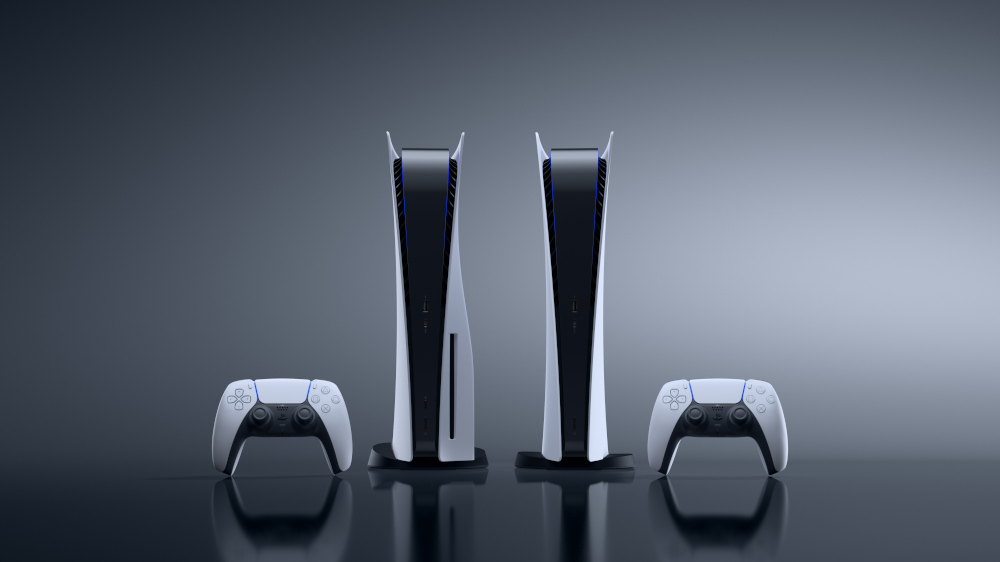

O PlayStation 5 (PS5) é o novo console que chega sete anos após o lançamento do seu antecessor PlayStation 4 (PS4). O videogame chega ao Brasil no dia 19 de novembro pelo preço de R$ 4.499, na versão digital, e R$ 4.999, na edição com leitor Blu-Ray Ultra HD.

Dê vida ao mundo dos jogos
Experimente diferentes níveis de força e tensão conforme você interage com seu controle e com os ambientes do jogo. Desde puxar uma corda de arco cada vez mais apertada a pisar nos freios de um carro de corrida, sinta-se conectado fisicamente às ações que acontecem na tela.